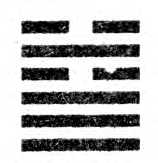

5. HSU / Değerlendirme
K’an trigramı (su, tehlike) Ch’in (cennet, güç)’ün üstünde olduğunda gökyüzündeki yağmur bulutlarını anlatır. Yağmur yağacaktır, bu arada kişi beklemeli ve zamanını hazırlıkla geçirmelidir. Değerlendirme, ölçüp biçme fikri, oturan meditatörü temsil eden eski ideogram Hsu’dan doğmuştur. Değerlendirme içinde, vücudun merkezindeki enerji deposunu besleme fikri de vardır. Tedbirli ama iddialı ilerlemek; rekabetten haberdar olmak, ama rakiplere iyi davranmak gerekir.
Karar
Değerlendirme. Eğer doğru yapılırsa zafere ulaştırır. Azim, şans getirir. Büyük suları aşmakta kazanç var.
Gerçeklerin olduğu gibi farkına varmalı ve bunu, dengeli ve kesin bir harekete geçilmesinin izlemesi gerekir. Önemli bir kararın, büyük değişiklikler yapmanın veya seyahat etmenin zamanıdır.
Görüntü
Bulutlar değerlendirmeyi simgeleyerek göğe yükselirler. Ulu kişi yer, içer ve mutluluğuna diyecek yoktur.
Bulutların ardından yağmur gelir ve bize beklemek düşer. Eğer gerçekten olgunsak bu süre içinde hem bedenimizi, hem aklımızı besler ve zamanı geldiğinde herşeye hazır oluruz.
Çizgiler
Aşağıda dokuz: Açık alanda bekleyiş. Pişmanlık duymadan kalandan yararlanın.
Huzursuzluk ve tatminsizlik dönemi. Kişi kendini tehdit altında hisseder. Düşünmeden harekete geçmeyin ve düzenli bir hayat sürün.
İkinci sırada dokuz: Kıyıda bekleyiş dedikoduya yol açıyor. İlerde şans gözüküyor.
Tehlike (su) yakındadır; kolayca sürtüşme ve kavga çıkabilir. Sakin olursanız olaylar kendiliğinden çözülecektir.
Üçüncü sırada dokuz: Çamura batmakta oluş düşmanı yüreklendiriyor.
Çevrenin gözü önünde bir konumdasınız. İlişkilerinizde dikkatli olun. Statünüzün veya mal varlığınızın tehlikeye girmesinden kaçının.
Dördüncü sırada dokuz: Kan içinde bekleyiş. Derin çukurdan kaçış.
Yapayalnız ve son derece tehlikeli bir durumdasınız. Tek çıkış yolu kendinize hakim olup beklemektir. Şu anda bir başarı şansı yoktur, tek yapacağınız duruma göğüs germeye çalışmaktır.
Beşinci sırada dokuz: Yemekte bekleyiş. Yolun devamında şans görünüyor.
İşler iyi gitmekte, şansınızın tadına varın ve rahat, sakin tavrınızı sürdürün. Çabalarınızı acele etmeden belli bir amaca yöneltin.
En üstte altı: Uçuruma düşüş. Üç beklenmedik misafir ortaya çıkacak; onlara nazik davranın. İlerde şans.
Tüm planlarınız alt üst olacaksa da, bu felaket sonrasında bir ümit ışığı belirecektir. Bu ışığı iyice inceleyip, mantıklı kullanın. Uyanık ve tedbirli tavrınız kazandıracak.